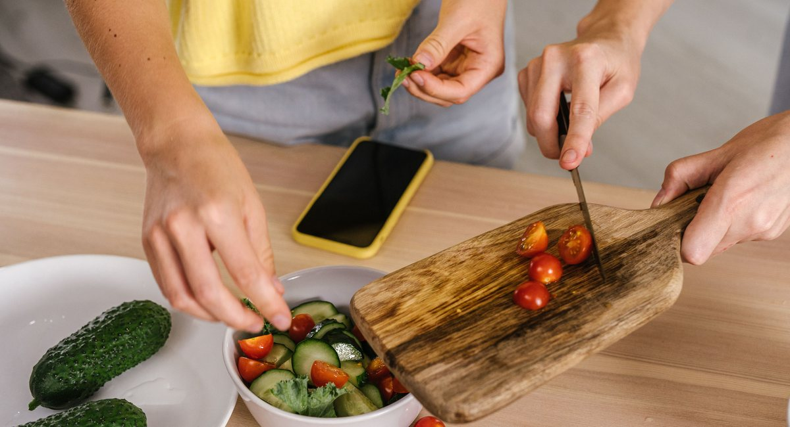
Desafio em andamento
7 dias cozinhando
Você preparou 2 receitas. Faltam 5 para concluir o desafio.
Nosso projeto começa com a definição do problema central, a partir das discussões iniciais e observações sobre o comportamento das pessoas no dia a dia, percebemos que cozinhar muitas vezes é visto como algo trabalhoso e demorado. Diante disso, formulamos nosso design challenge utilizando o formato HMW, "How Might We..." A nossa pergunta norteadora foi como podemos tornar o processo de cozinhar mais fácil e divertido. Essa pergunta é importante porque não limita a solução, mas direciona o pensamento para melhorar a experiência do usuário, tanto do ponto de vista funcional quanto emocional. Não queremos apenas facilitar o hábito de cozinhar, mas também tornar esse momento mais leve e engajador.
Na etapa de desk research, organizamos nosso conhecimento utilizando a matriz CSD, certezas, suposições e dúvidas. Nas certezas, destacamos pontos como o impacto da gamificação, por exemplo o uso de recompensas e streaks, que ajudam na criação de hábitos. Também consideramos dados como o crescimento do uso de delivery, indicando que muitas pessoas deixam de cozinhar. Nas suposições, levantamos hipóteses que ainda precisam ser validadas, como a ideia de que o compromisso social pode incentivar o hábito de cozinhar, ou que a falta de planejamento desmotiva os usuários. Já nas dúvidas, identificamos questões importantes para investigação, como quem cozinha menos, quais são as dificuldades reais na cozinha e quais requisitos uma solução digital precisaria ter para ser prática no uso cotidiano. Essa etapa funciona como uma base de raciocínio, como montar um mapa antes de começar uma viagem, não resolve o problema, mas orienta melhor os próximos passos.
Elementos de gamificação (streaks em particular) aumentam a chance de formação de hábito no uso de plataformas digitais
Em seguida, analisamos soluções existentes no mercado para entender o que já funciona e o que pode ser melhorado. Observamos plataformas como serviços de entrega de ingredientes e receitas, que facilitam o planejamento, além de sites e aplicativos de receitas que oferecem uma grande seleção de receitas e funções. Também analisamos soluções de outros domínios, como aplicativos de treino, que utilizam acompanhamento de progresso e feedback constante para manter o usuário engajado. Com isso, conseguimos identificar padrões importantes, como interfaces simples e diretas que ajudam na adesão do usuário, organização de conteúdo e personalização como diferenciais e o uso de feedback e progresso para aumentar o engajamento. Por outro lado, também encontramos problemas como a falta de padronização nas receitas, dificuldade de adaptação às preferências do usuário e experiências pouco motivadoras no longo prazo. Essa análise não serve para copiar soluções, mas para entender o que funciona, o que não funciona e onde existem oportunidades para melhorar no design.
Utilizamos o mapa de empatia para aprofundar o entendimento do usuário. Analisamos o que o usuário fala, pensa, faz e sente. No que ele fala, aparecem desejos como cozinhar melhor e ter mais autonomia. No que ele pensa, surgem preocupações como tempo, esforço e custo dos ingredientes. No que ele faz, percebemos comportamentos como recorrer a soluções rápidas, como delivery ou receitas simples. E no que ele sente, aparecem emoções como cansaço, frustração e, em alguns casos, falta de motivação. Essa etapa é essencial porque transforma dados em empatia, permitindo entender não apenas a tarefa de cozinhar, mas toda a experiência do usuário, incluindo suas dificuldades, expectativas e emoções. Com todas essas etapas, construímos uma base sólida para propor uma solução que realmente faça sentido, com o objetivo de tornar o hábito de cozinhar mais acessível, prazeroso e integrado à rotina das pessoas.

Na coleta de respostas ao formulário, obtivemos as respostas de 42 pessoas diferentes. Entre suas respostas, podemos tirar diversas conclusões, como:
• 53.5% são homens, 46.5% são mulheres (1 resposta foi não-séria, sendo desconsiderada).
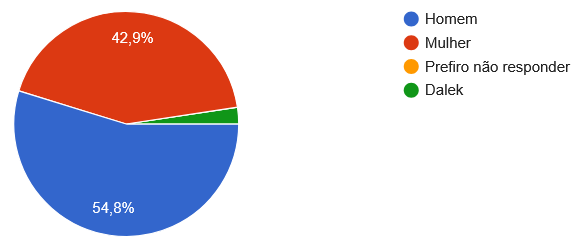


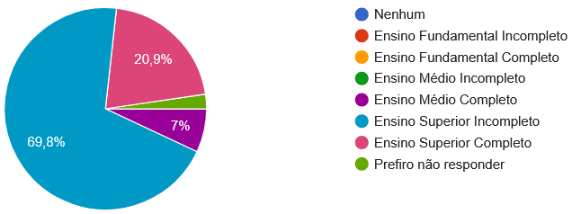
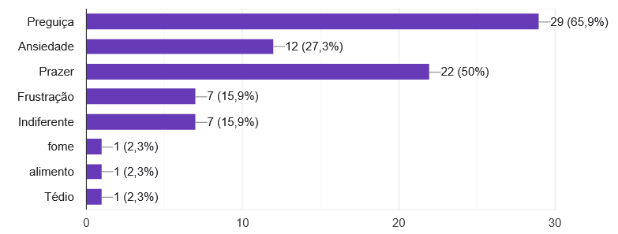
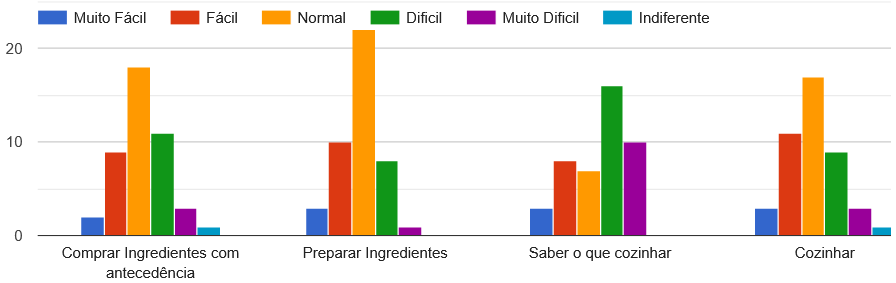

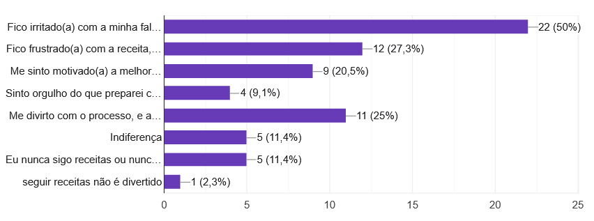
• Analisando as respostas obtidas na entrevista com os participantes ideais, nós percebemos que as definições de sucesso dos entrevistados são bem diferentes, e que mesmo entre usuários ideais, há diferentes motivações para reforçar o hábito da cozinha.
Um entrevistado disse "Pra mim é conseguir fazer uma refeição completa. Proteína, carboidrato, etc, com menos de vinte reais e em menos de quarenta minutos.", enquanto outro expressou um desejo de impressionar amigos e visitas com suas habilidades culinárias.
Ambos tiveram experiências frustradas com sites de receitas, e gostaram muito da ideia de compartilhar receitas com os amigos, e de ver imagens reais dos pratos como realmente vão ficar.
Os dois entrevistados usam plataformas com elementos gamificados, mas têm experiências bem diferentes nesses aplicativos. Um deles relatou que gosta do aspecto competitivo dos leaderboards, e que a motivação gerada pela ofensiva é maior do que o desânimo de perder a sequência. O outro relatou que não gosta da ofensiva porque ela acaba se tornando mais importante que o hábito em si, e encorajando o usuário a fazer apenas o mínimo ou a trapacear para manter a sequência. Ambos gostaram da ideia de colecionar conquistas e distintivos digitais como recompensa por cozinhar consistentemente e preparar pratos variados. No entanto, os dois mostraram mais interesse no aspecto social (Letterboxd, Gymrats) e na interação com amigos do que nos mecanismos gamificados, que condiz com os resultados da nossa pesquisa quantitativa.
Um dos entrevistados destacou que o planejamento é a maior barreira para que ele desenvolva o hábito de cozinhar no dia a dia, e sugeriu que o nosso aplicativo contasse com funcionalidades que ajudam a planejar o orçamento e os ingredientes para minimizar as idas ao mercado, os gastos e o desperdício: "Eu ia querer que [o aplicativo] me ajudasse a planejar a semana baseado no que eu tenho em casa e no meu orçamento. Tipo, eu falo "tenho R$80 pra semana e tenho arroz, feijão e frango"
Os dois entrevistados se interessaram na competição amigável:
"No GymRats, que é o app que uso pra academia, você vê o treino dos amigos em tempo real e aquilo cria uma competição saudável. Com culinária seria igual. Se eu vejo que meu amigo já cozinhou quatro vezes na semana e eu zero, isso me incomoda. Eu TERIA que fazer alguma coisa."
Mas o outro ressaltou que os elementos sociais tem que ter um tom de brincadeira, e que a comparação com amigos pode virar uma fonte de ansiedade se for levada muito a sério.
Um dos entrevistados também comentou que o aspecto mais interessante da ideia é a realidade das interações. Que está enjoado de ver imagens e vídeos de receitas feitas por profissionais com muito mais recursos, habilidade e orçamento que ele que, ao invés de servirem como inspiração, acabam desmotivando por parecerem inalcançáveis.
• Uma coisa que aparece forte nos dois casos é que o problema não é saber cozinha, mas sim manter a consistência. A respondente até cozinha bem e o rodrigo também consegue cozinhar quando tenta então habilidade não é o principal bloqueio. O problema é transformar isso em hábito no dia a dia.
Outro ponto muito forte é a questão da energia e contexto do momento. A respondente mostra claramente que existe uma diferença entre “a pessoa do sábado” (motivada, planeja, compra ingredientes) e “a pessoa da terça” (cansada, sem energia, toma decisão rápida). Isso é um insight importante: o planejamento atual não considera o estado real do usuário no momento de cozinhar. Já o Rodrigo mostra algo parecido, mas em forma de “pico de motivação que desaparece”, ou seja, ele entra animado e depois volta para a inércia.
entendemos que tem um padrão muito claro de que estímulo externo ativa o comportamento. A pessoa 6 cozinha quando vê um vídeo, e a pessoa 5 quando vê algo de uma amiga. Mas esse estímulo não se sustenta sozinho, ele precisa virar rotina. Então o problema não é gerar interesse, é manter continuidade.

Cassandra Lopes
Idade: 19 Ocupação: Estudante de universidade
Estado Civil: Solteira Características: extrovertida, frugal, amigável, ama cozinhar
Bio: Mora no Rio de Janeiro com sua família, estuda na UFF e leva 1 hora para se deslocar de sua casa até a faculdade. Cozinha na maioria dos dias enquanto seus pais trabalham. Gosta de compartilhar o que cozinha com os amigos, como em festas.
Objetivos:• Gastar menos tempo escolhendo o que cozinhar;
• Compartilhar com os amigos as suas receitas;
• Economizar mais ao gastar menos em comida de rua.
Frustrações:• Preço de comidas em restaurantes e barracas aumentando;
• Saber poucas receitas e escolher qual cozinhar na hora.
"Eu não tenho problemas para cozinhar, mas acho chato perder tempo pensando no que eu vou fazer!"
Utiliza Tudogostoso, Duolingo e Instagram em seu celular.
Thomas Guimarães
Idade: 21 Ocupação: Estudante de universidade
Estado Civil: Solteiro Características: introvertido, inexperiente, estudioso, come fora frequentemente
Bio: Mora em Niterói com colegas num apartamento compartilhado, estuda na UFF e leva 15 minutos andando para chegar até a faculdade. Raramente cozinha, mas tem interesse.
Objetivos:• Comer fora de casa menos frequentemente;
• Saber cozinhar para ter mais independência;
• Ter mais variedade na própria dieta.
Frustrações:• Comidas de rua tendem a ser menos saudáveis;
• Quando são mais completas, costumam ser bem mais caras.
"Minha família sempre cozinhou pra mim, e agora que estou morando fora, tenh comido muita porcaria. Quero mudar esse hábito!"
Utiliza Ifood e 99 para pedir comida em seu celular, e Discord no computador.

Jorge da Silva
Idade: 41 Ocupação: Professor
Estado Civil: Casado Características: social, curioso, sabe cozinhar, pouco tempo livre
Bio: Pai de família, mora em Niterói. Trabalha no Rio e demora para chegar em casa, deixando-o com menos tempo para cozinhar. A sua esposa tipicamente cozinha, mas ele quer fazer comida mais frequentemente.
Objetivo:• Aprender receitas novas;
• Agradar a família com o que cozinha;
• Mostrar aos amigos as receitas novas que fizer.
Frustrações:• Pouco tempo livre para experimentar coisas novas;
• Quando cozinha, sempre faz as mesmas receitas que já sabe.
"Queria ter mais tempo pra praticar essa habilidade, então como o tempo tá contado, vou tentar pelo menos aprender mais rapidamente."
Utiliza Tudogostoso, Receitas da Globo e Facebook em seu celular e computador.
Milena Soares
Idade: 28 Ocupação: Jornalista
Estado Civil: Solteira Características: moderadamente social, estudiosa, curiosa, dedicada ao trabalho
Bio: Morava em São Gonçalo com sua família, se mudou recentemente para o Rio de Janeiro. Já conversava sobre cozinhar com amigos, mas seu foco nos estudos e trabalho deixaram pouco tempo para aprender muitas receitas.
Objetivo:• Aprender várias receitas novas;
• Não ter que comer fora, agora que mora sozinha;
• Preparar refeições para a semana toda.
Frustrações:• Pouca prática na cozinha, sempre comeu com a família ou fora de casa;
• Não tem ideia por onde começar para aprender mais.
"O que eu queria é uma direção do que fazer, porque quando penso nas comidas que minha mãe fazia, parecem complicadas demais para eu começar por elas!"
Utiliza Ifood, Habitica e Instagram em seu celular e computador.
Modelo de Tarefas para acesso ao aplicativo EasyChef: 1.1) Usuário está olhando para a tela 1.2) Usuário decide se: 1.2.1) Segue a receita genérica (botão) 1.2.2) Segue a receita do amigo (botão) 1.2.3) Segue a receita feita (botão) 1.3) Usuário clica em "registrar receita feita" (botão) 1.4) Usuário registra receita feita: 1.4.1) Usuário escreve titulo 1.4.2) Usuário escreve descrição 1.4.3) Usuário escreve data e hora (opcional) 1.4.4) Usuário deve registrar foto (botão) 1.4.4.1) Usuário deve escolher se quer tirar uma foto ou selecionar da galeria: 1.4.4.2) Usuário escolheu a foto 1.4.5) Usuário terminou de inserir informações e aperta em publicar (botão)
Atores: Cassandra Lopes (estudante, 19 anos)
Contexto: É terça-feira, 18h30. Cassandra acabou de voltar da UFF após 1 hora de deslocamento. Ela está cansada depois de um dia cheio de aulas e precisa decidir o que vai cozinhar para o jantar. Amanhã tem mais aulas e ela quer economizar não comprando comida fora, mas está sem criatividade e com pouca energia para pensar.
Objetivos:
Ações e Eventos: Cassandra abre a geladeira e vê: arroz, feijão, frango, tomate e cebola. Pega o celular e abre o navegador. Busca "receitas com frango" no Google. Aparecem centenas de resultados. Clica no TudoGostoso. Rola a página vendo várias receitas, mas não consegue decidir qual fazer. Algumas parecem trabalhosas demais, outras não a agradam visualmente. Depois de 15 minutos rolando receitas, ainda não decidiu. Olha o relógio: 18h45. Pensa "já perdi muito tempo nisso". Abre o Instagram para se distrair por alguns minutos. Vê stories de amigos comendo em restaurantes. Volta para a cozinha, olha a geladeira novamente. Considera pedir comida pelo iFood, mas lembra que está tentando economizar. Finalmente decide fazer o básico: arroz, feijão e frango grelhado - a mesma coisa que fez ontem e anteontem. Sente frustração por comer sempre a mesma coisa e por ter perdido tanto tempo tentando decidir.
Pontos Problemáticos:
1. Paralisia de decisão: Muitas opções disponíveis tornam a escolha mais difícil, não mais fácil (Lei de Hick)
2. Falta de personalização: Sites de receita não consideram o que ela tem em casa, seu orçamento ou quanto tempo ela tem disponível
3. Estado emocional: A "Cassandra da terça" (cansada) tem necessidades diferentes da "Cassandra do sábado" (motivada) - os sites não se adaptam ao contexto
4. Perda de motivação: O tempo gasto decidindo consome a energia que seria usada para cozinhar
5. Repetição de receitas: Sem direcionamento, acaba fazendo sempre as mesmas coisas por ser mais fácil
6. Falta de registro histórico: Não tem controle do que já fez recentemente para evitar repetições
Atores: Thomas Guimarães (estudante, 21 anos)
Contexto: É domingo, 14h. Thomas está no apartamento compartilhado em Niterói. Seus colegas saíram e ele decidiu finalmente tentar cozinhar algo "de verdade" em vez de pedir pelo iFood como sempre faz. Ele tem motivação, mas não sabe por onde começar.
Objetivos:
Ações e Eventos: Thomas abre o YouTube e busca "receitas fáceis para iniciantes". Encontra um vídeo de 15 minutos mostrando como fazer strogonoff. O resultado no vídeo parece incrível - cremoso, bem apresentado, profissional. Anima-se e decide tentar. Vai ao supermercado comprar os ingredientes. Na seção de creme de leite, fica confuso: creme de leite, creme de leite fresco, creme de leite light - qual usar? Escolhe um aleatoriamente. Volta para casa, separa os ingredientes e começa. O vídeo é corrido, então ele precisa pausar constantemente, lavar as mãos, voltar o vídeo. Perde o ponto onde estava. O celular bloqueia a tela. Tenta desbloquear com as mãos sujas. Depois de 1h de trabalho, o strogonoff fica aguado e sem gosto. Nada parecido com o vídeo. Thomas se sente frustrado: "Não sou bom nisso mesmo". Come um pouco por obrigação e joga o resto fora. Pensa: "Perdi tempo e dinheiro. Na próxima vez peço no iFood mesmo". Nos próximos dias, volta a pedir comida por aplicativo. A motivação inicial desapareceu.
Pontos Problemáticos:
1. Expectativa vs Realidade: Receitas profissionais criam expectativas irreais que desmotivam iniciantes quando não conseguem replicar
2. Falta de orientação adequada: Vídeos não são pensados para consulta durante o preparo (problema de interação - usar celular na cozinha)
3. Ausência de contexto: Não sabe qual ingrediente escolher entre variações (creme de leite normal vs fresco vs light)
4. Sem sistema de progressão: Não há indicação de que receitas são realmente apropriadas para seu nível de habilidade
5. Falha sem feedback construtivo: Quando a receita dá errado, não sabe o que fez de errado ou como melhorar
6. Pico de motivação não sustentado: A motivação inicial não se transforma em hábito porque a primeira experiência foi frustrante
7. Perda de investimento: Tempo e dinheiro gastos sem resultado reforçam a crença de que "não vale a pena"
Atores: Jorge da Silva (professor, 41 anos)
Contexto: É sábado de manhã, 9h. Jorge está animado porque tem o fim de semana livre. Durante a semana, chegou a pensar em várias receitas novas que gostaria de experimentar para impressionar a família. Hoje é o dia! Ele quer fazer algo especial para o almoço de domingo.
Objetivos:
Ações e Eventos: Jorge abre o TudoGostoso e começa a procurar receitas de risotos - algo que sempre quis aprender. Encontra uma receita de risoto de funghi que parece deliciosa. Anota os ingredientes. Vai ao supermercado. Procura o funghi seco mas não encontra na prateleira. Pergunta ao atendente que diz que está em falta. Pensa em substituir por outro cogumelo, mas não sabe se vai dar certo. Decide tentar fazer outro dia quando encontrar os ingredientes certos. Volta para casa. Procura outra receita. Encontra uma de bobó de camarão. Lista os ingredientes novamente. Olha o relógio: já é 11h30. Se for ao mercado de novo, não vai dar tempo de preparar para o almoço. Decide deixar para fazer no domingo. No domingo, acorda um pouco mais tarde. Tem alguns afazeres da casa. Quando vai começar a se organizar para cozinhar, já é tarde e a família está com fome. Sua esposa sugere fazer o macarrão de sempre. Jorge concorda, um pouco frustrado. Pensa: "Na próxima eu faço". Mas na próxima semana, com trabalho e trânsito, o tempo livre desaparece novamente. A receita nova fica apenas como uma intenção.
Pontos Problemáticos:
1. Planejamento sem contexto: Não consegue ver quais receitas são viáveis considerando tempo disponível e ingredientes acessíveis
2. Falta de flexibilidade: Não sabe como substituir ingredientes quando não encontra no mercado
3. Sem suporte ao planejamento temporal: Não há ajuda para planejar QUANDO fazer a receita considerando sua rotina real
4. Perda de momentum: O tempo entre decidir fazer e realmente fazer é grande demais, fazendo a motivação evaporar
5. Ausência de compromisso: Sem uma estrutura que o ajude a se comprometer, é fácil desistir quando surgem obstáculos
6. Não há preparação prévia: Poderia ter verificado disponibilidade de ingredientes antes de escolher a receita
7. Ciclo de procrastinação: "Na próxima eu faço" se torna um padrão que mantém o status quo
Atores: Milena Soares (jornalista, 28 anos)
Contexto: Segunda-feira, 19h. Milena está na sua nova casa no Rio de Janeiro. É sua segunda semana morando sozinha após se mudar de São Gonçalo. Ela abriu a geladeira e percebeu que precisa urgentemente começar a cozinhar - não pode continuar gastando tanto com delivery e comida de restaurante. Mas ela não tem ideia de como organizar isso.
Objetivos:
Ações e Eventos: Milena abre o Google e busca "como começar a cozinhar do zero". Encontra artigos sobre "10 receitas básicas" e "cozinha para iniciantes". Clica em um artigo que sugere fazer arroz, feijão, e carnes básicas. Parece simples, mas ela não sabe nem quanto de arroz deve fazer para uma pessoa, ou como conservar o feijão durante a semana. Procura "meal prep para iniciantes". Encontra vídeos de pessoas preparando 20 marmitas de uma vez. Parece muito complexo e trabalhoso. Pensa: "Eu nem sei fazer as receitas individuais, como vou fazer tudo isso de uma vez?". Abre o Habitica (que ela usa para organizar tarefas do trabalho) e tenta criar uma tarefa "aprender a cozinhar", mas não sabe como quebrar isso em passos menores e acionáveis. No Instagram, vê uma amiga que postou um prato bonito que fez. Manda mensagem perguntando a receita. A amiga responde com um link do Pinterest. Clica no link: é uma receita em inglês, com "2 cups" e medidas que ela não entende. Fica ainda mais confusa. Olha o relógio: 20h. Está com fome. Abre o iFood e pede um hambúrguer. Sente culpa por gastar mais dinheiro e por não ter progredido nada. Pensa: "Eu preciso de alguém para me ensinar do zero, tipo uma mãe mesmo".
Pontos Problemáticos:
1. Falta de direcionamento estruturado: Sites e apps assumem um nível básico de conhecimento que ela não tem
2. Sobrecarga de informação: Muitas fontes diferentes com abordagens conflitantes deixam-na paralisada
3. Ausência de progressão pedagógica: Não há um "caminho de aprendizado" claro - qual receita vem antes da outra?
4. Impossibilidade de fragmentar a tarefa: "Aprender a cozinhar" é grande demais; ela precisa de sub-objetivos menores e alcançáveis
5. Falta de adaptação ao contexto: Meal prep para 20 porções não faz sentido para quem ainda não sabe fazer 1 porção
6. Barreiras de comunicação: Medidas e termos em outras línguas ou não-familiares aumentam a complexidade
7. Sem rede de suporte: Ela precisa de orientação humana, mas não tem acesso fácil a isso
8. Ciclo de culpa improdutivo: Cada vez que pede delivery, reforça sentimento de fracasso sem avançar na solução
9. Gamificação inadequada: Apps como Habitica não foram feitos para aprendizado progressivo de habilidades complexas
10. Problema de medição: Não sabe quanto fazer "para uma pessoa", quanto tempo algo dura na geladeira, etc.
Protótipo interativo mobile do EasyChef. A versão foi revisada a partir da Avaliação Heurística e do Percurso Cognitivo, com rótulos mais claros, feedback das ações, navegação consistente, ajuda e prevenção de erros.
Boa noite
Encontre uma receita compatível com seu tempo e experiência.

Desafio em andamento
Você preparou 2 receitas. Faltam 5 para concluir o desafio.
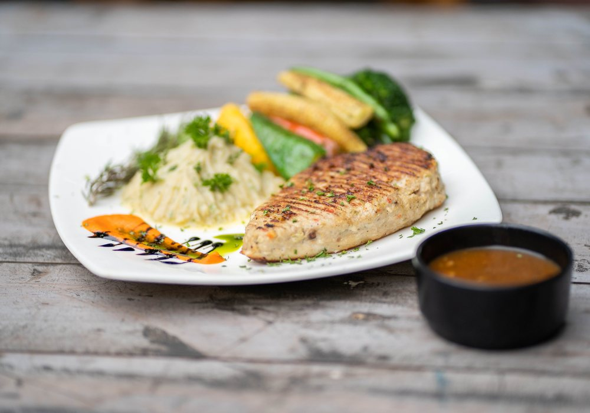
“Usei alho, limão e páprica. Ficou pronto em 35 minutos.”
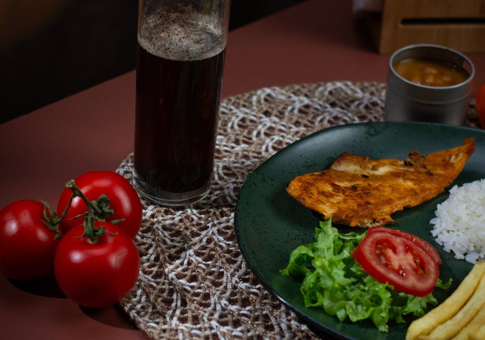
“Ficou leve e foi mais fácil do que eu esperava.”
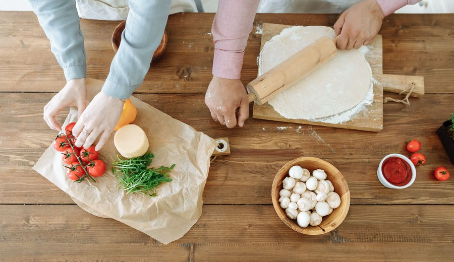
Cozinhar ao menos 3 vezes por semana
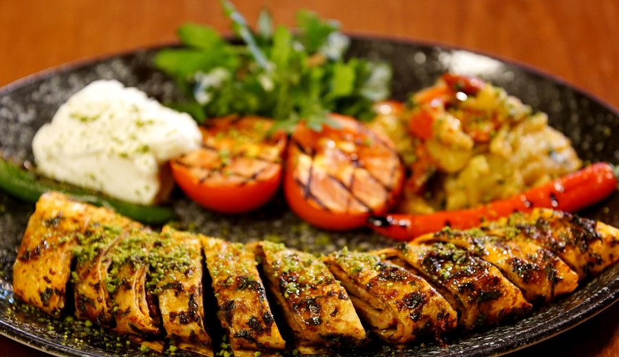
Experimentar uma receita nova até domingo
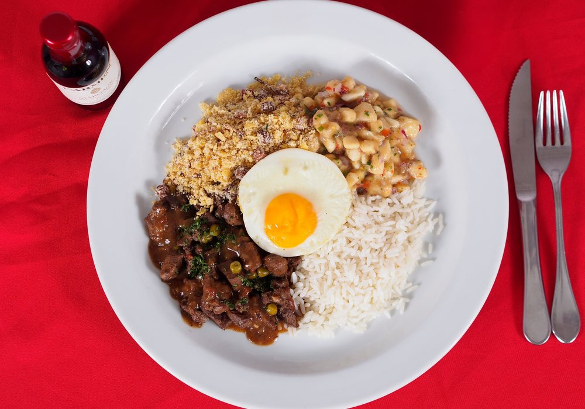
Planejar refeições econômicas em grupo
Cozinhando com mais constância
Prepare mais 1 receita para liberar “Semana completa”.
Use o botão “Nova ação” para encontrar uma receita ou registrar um prato já preparado.
Combine tempo, custo e nível de experiência para reduzir a quantidade de opções.
Confira ingredientes, siga os passos e registre o resultado quando terminar.
Receitas do EasyChef são organizadas pela plataforma. Receitas de amigo vêm das publicações das pessoas que você segue.
Abra “Nova ação” e escolha “Registrar prato que preparei”.
Escolha uma opção. Você poderá voltar sem perder seu progresso.
Filtros ativos
3 receitas encontradas
Receita selecionada
Dica: marque cada item para evitar esquecer ingredientes durante o preparo.
Tempo estimado: 35 minutos
Revise a receita e registre como ficou para acompanhar seu progresso.
Você avançará no desafio: 3 de 7 receitas.
Conte como ficou. Os campos marcados são necessários para publicar.
40 min · Dificuldade média · 4 porções
Frango grelhado acompanhado de arroz e legumes, com preparo simples para a rotina.
Avaliação da interação
A Avaliação Heurística é um método de inspeção no qual especialistas analisam uma interface com base nas dez heurísticas de Nielsen. No EasyChef, os avaliadores percorreram as principais telas e tarefas do protótipo, registraram problemas de usabilidade, classificaram sua gravidade e propuseram soluções de redesign. Depois, os achados individuais foram reunidos em um resultado consolidado.
As capturas abaixo registram a versão anterior do protótipo. Elas ajudam a relacionar cada problema observado com o elemento concreto da interface que motivou a classificação heurística e a proposta de redesign.
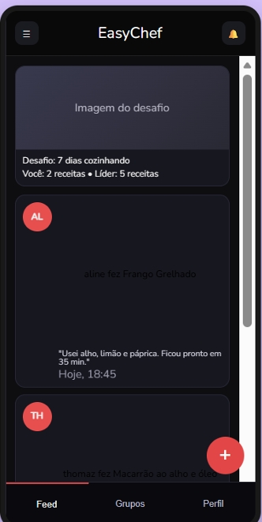
Heurísticas violadas: Visibilidade do estado do sistema e Consistência e padronização.
Descrição: O ícone de notificações aparentava ser clicável, mas não executava ação nem fornecia feedback. Na mesma tela, o desafio informava apenas valores isolados, sem meta total, percentual ou barra de progresso, dificultando a compreensão do estado atual.
Redesign: Implementar uma área de notificações com contador de itens não lidos e apresentar o desafio com meta, percentual e progresso visual.
Correção aplicada: foram adicionadas uma tela de notificações, um indicador de pendências, uma barra de progresso e uma explicação textual do que falta para concluir o desafio.
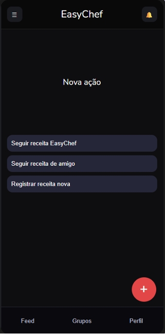
Heurísticas violadas: Reconhecimento em vez de memorização e Correspondência entre o sistema e o mundo real.
Descrição: O símbolo “+” indicava que algo poderia ser adicionado, mas não deixava claro se a função serviria para buscar uma receita, publicar conteúdo ou registrar um prato. Os rótulos “Seguir receita EasyChef” e “Seguir receita de amigo” também não explicavam com precisão a diferença entre os caminhos.
Redesign: Acrescentar um rótulo textual ao botão e reescrever as opções com verbos e objetivos próximos da linguagem do usuário.
Correção aplicada: o botão passou a se chamar “Nova ação”, e as opções foram reformuladas para “Encontrar uma receita do EasyChef”, “Cozinhar uma receita de amigo” e “Registrar prato que preparei”.
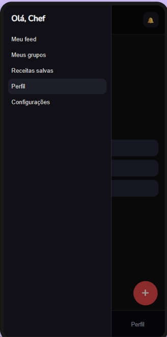
Heurísticas violadas: Controle e liberdade do usuário e Consistência e padronização.
Descrição: Depois de abrir o menu, o usuário não encontrava uma indicação explícita de como fechá-lo. O destaque da opção atual também era insuficiente para comunicar com segurança em qual área do sistema ele se encontrava.
Redesign: Incluir botão de fechamento, permitir clique fora do painel, aceitar a tecla Esc e destacar de maneira consistente a opção ativa.
Correção aplicada: foram implementadas as três formas de fechamento e um estado visual mais claro para a seção selecionada.
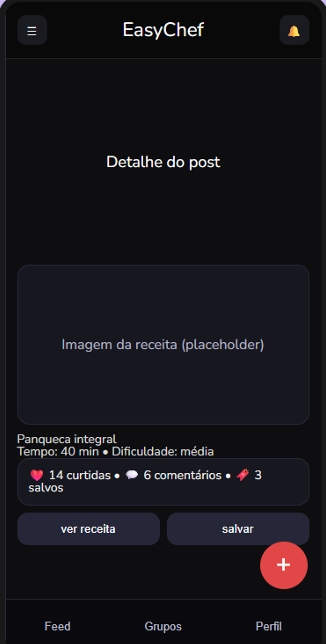
Heurísticas violadas: Visibilidade do estado do sistema e Projeto estético e minimalista.
Descrição: A ausência de uma imagem real reduzia a compreensão do conteúdo publicado. Além disso, título, tempo, dificuldade, métricas e ações apareciam comprimidos, prejudicando a leitura e a identificação das possibilidades de interação.
Redesign: Substituir placeholders por imagens reais, separar informações descritivas das métricas sociais e destacar as ações principais com rótulos consistentes.
Correção aplicada: foram inseridas imagens das receitas, melhorada a hierarquia tipográfica e separadas as ações de visualizar, salvar, curtir e comentar.
Heurística violada: Ajuda e documentação.
Descrição: O protótipo não explicava como buscar uma receita, acompanhar o preparo ou registrar um prato, o que poderia prejudicar principalmente pessoas com pouca experiência culinária ou pouca familiaridade com o aplicativo.
Redesign: Criar uma área de ajuda organizada pelas principais tarefas, com explicações curtas e respostas para dúvidas frequentes.
Correção aplicada: foi incluída uma seção de ajuda com orientações sobre busca, filtros, preparo, registro e funcionalidades sociais.
A análise mostrou que os principais problemas estavam relacionados à falta de feedback, à ambiguidade de algumas ações e à ausência de informações suficientes sobre o estado do sistema. A heurística mais afetada foi Visibilidade do estado do sistema. Os resultados orientaram o redesign do protótipo e ajudaram a priorizar correções antes da entrega final.
Abrir relatório completo da Avaliação HeurísticaAvaliação com participantes
O teste foi realizado no Useberry com imagens estáticas do protótipo. Em cada tarefa, o participante deveria indicar apenas o primeiro local em que clicaria. Depois de cada escolha, foi apresentada uma pergunta de confiança em escala de 1 a 7. Os mapas de calor abaixo mostram a distribuição dos primeiros cliques, enquanto os gráficos apresentam o tempo gasto antes da decisão.
O participante deveria imaginar que havia chegado em casa depois de um dia cansativo e queria preparar algo simples, rápido e adequado à sua experiência, evitando pedir comida por aplicativo.
Interpretação: a maior concentração de cliques ocorreu em “Escolher receita”, indicando que o principal chamado da tela foi compreendido. Entretanto, também houve cliques em “Receitas”, “Nova ação” e “Ver grupos”, o que revela caminhos concorrentes. O tempo variou dos primeiros segundos até cerca de 27 segundos, mostrando que parte dos participantes hesitou antes de decidir.
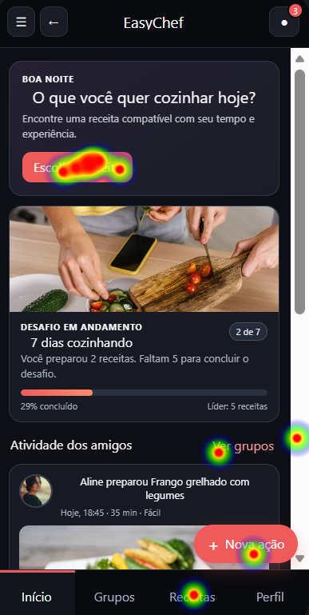
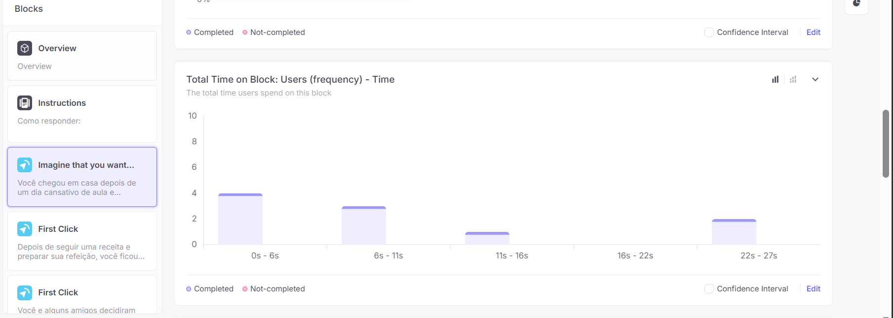
Depois de preparar uma refeição, o participante deveria iniciar o registro do prato para compartilhar o resultado com outras pessoas dentro do aplicativo.
Interpretação: os cliques ficaram fortemente concentrados em “Nova ação”, o que indica boa associação entre o rótulo e a intenção de registrar conteúdo. A maior parte das respostas ocorreu entre 2 e 4 segundos, embora tenham surgido alguns cliques alternativos no menu e em elementos do desafio.
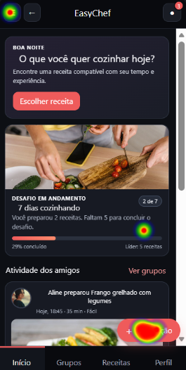
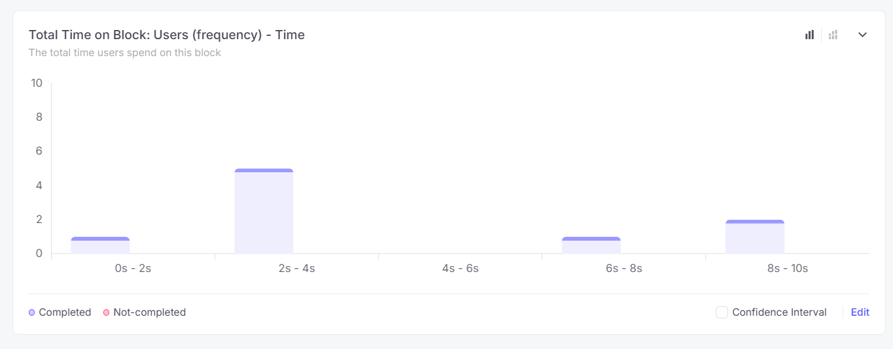
O participante deveria imaginar que ele e alguns amigos queriam criar uma comunidade própria para compartilhar receitas e acompanhar o progresso dos integrantes.
Interpretação: a concentração principal ocorreu em “Criar grupo”, demonstrando que a ação está visível e utiliza um vocabulário compatível com o objetivo. A maioria decidiu nos primeiros 5 segundos; um caso mais demorado sugere que alguns usuários ainda podem considerar o botão “Nova ação” ou outros elementos.
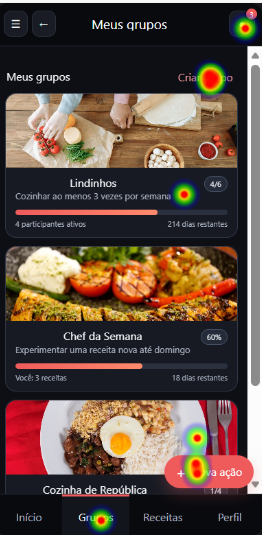
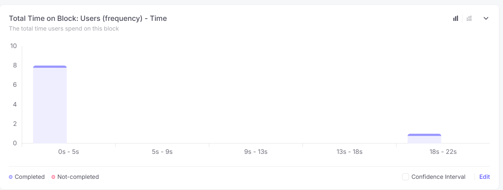
O participante deveria procurar um grupo existente com objetivos compatíveis, conhecer sua proposta e iniciar a exploração antes de decidir se gostaria de participar.
Interpretação: os cliques se distribuíram entre diferentes cards de grupos e também apareceram em controles periféricos. Esse padrão é coerente com uma exploração da lista, mas evidencia que os cards não apresentam uma ação explícita como “Ver grupo” ou “Participar”. Alguns participantes demoraram mais de 25 segundos, indicando maior incerteza nesta tarefa.
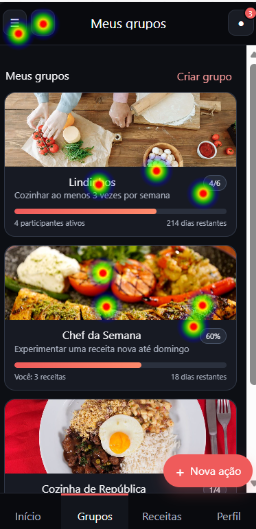
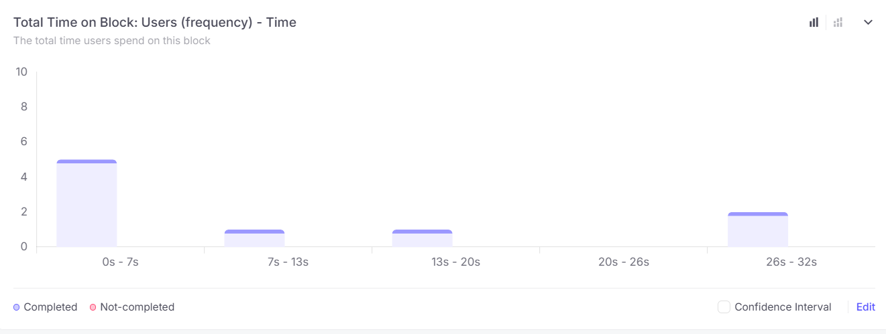
As tarefas de encontrar uma receita, compartilhar um prato e criar um grupo apresentaram pontos de concentração claros, sugerindo boa compreensão das ações principais. A tarefa de explorar grupos existentes foi a mais dispersa e apresentou tempos mais altos em parte das respostas. Como consequência, o redesign deve manter os rótulos claros já existentes e acrescentar ações explícitas nos cards, como “Ver detalhes” e “Participar do grupo”.